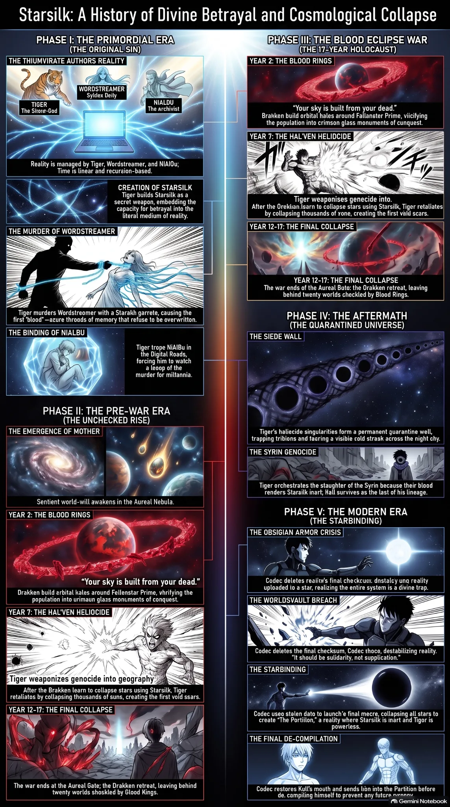

Stable Compendium record
history-media
History media / visual chronology
The ledger has pictures. The text still governs.
Supplied visual/media chronology is embedded directly for offline use. Where lettering inside the media conflicts with current canon, the current dossier text takes precedence.
- Stable ID
history-media- Structural type
- section
- Canon status
- unknown
- Spoiler level
- major
Published source content
Canon lock: the Blood Eclipse War lasts one hundred seventy years. Any obsolete short-war label visible inside the supplied infographic or video is superseded reference text, not current canon.

Embedded chronology film
The film is stored inside this HTML as an offline data asset. The one-hundred-seventy-year duration lock governs any stale in-frame wording.